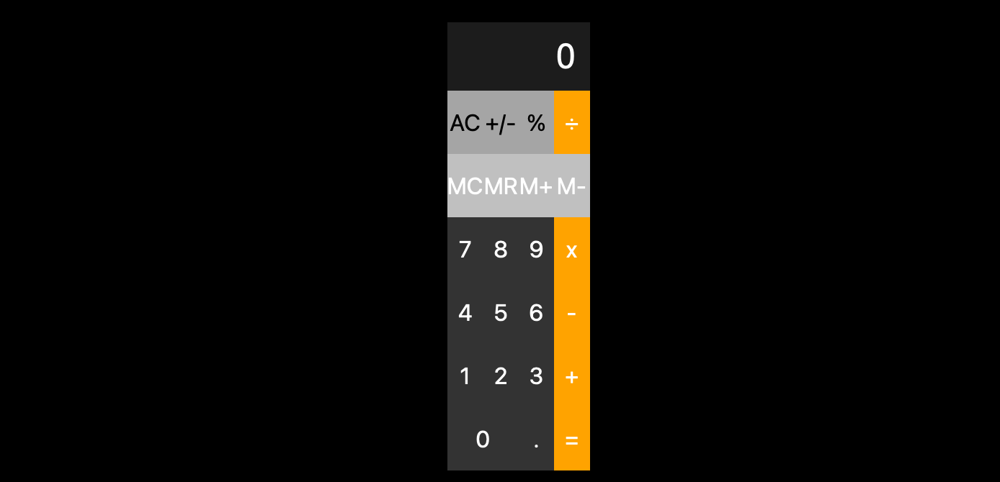

About me
My name is Dominique Boykin, I am from The Bronx, New York. I am an Air Force veteran, I served for 6 years and 3 months. My favorite sports teams are the New York Yankees, The Los Angeles Lakers, and The New York Giants. I am a senior at San Francisco State University and I am a computer science major. I love to travel, watch sports whether live or on television, try new foods and restaurants, and go to concerts. I like to listen to music, I have many different genres of music such as Hip Hop,R&B,Reggae, Spanish trap music, Brazilian, Lofi, and classical/piano music when I am studying or doing classwork. The places that I have traveled to are Amsterdam, Spain, Italy,London,Paris,Belgium,Germany,France,Czech Republic, and Brazil. I plan to go to Japan and to some places in the Caribbean such as The Dominican Republic, Puerto Rico, Jamaica, Cuba, and Haiti.
JavaScript Calculator
A calculator built with vanilla JavaScript, styled to mimic the iOS/Android calculator. Features basic operations, clear, percent, decimal input, and keyboard support.
Technologies: HTML, CSS, JavaScript
Launch CalculatorSkills
- Java
- C++
- Python
- HTML
- CSS
Education
- High School Diploma
- Community College of The Air Force degree
- Pursing a Bachelors of Computer science (Expected 2025)
Contact
Email: dboykin@mail.sfsu.edu